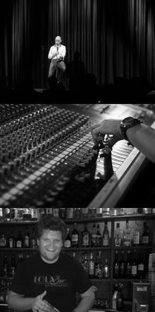

We are premiering this year as the two-day campfire event for developers in central Europe. With about a dozen international speakers we are bringing Ruby, Python, JavaScript, PHP and our shared passion for the web together. Join them and 150 fellow coders in Hamburg to learn, teach, hack and have fun.
So Coded is crafted to your convenience.
We think good talks need their time to sink in. So we made room for you to think and talk about them.
We think boring talks are annoying so we skip them and go only with a handful
awesome speakers
each day.
We think a hacker conference should be about hacking. So we have rented a whole house to make room for you to mingle.
Check out our
travel guide
for more information on coming to Hamburg and getting around.
One City - So Many Devs
As a hack-centric but language-agnostic conference So Coded is the ideal setting for passionate developers - a perfect storm of tech interests. No matter if your pet peve is Ruby, JavaScript, PHP, C#, Java, or anything else. As long as you code, we got you covered. So Coded!
The Venue

Be our guest in an old, remodeled police station which now features a large multi- purpose hall, two bars, and a plethora of smaller rooms for impromptu discussions, hang outs and hack sessions.
With about a dozen high-quality talks sprinkled across two days, and with lots of breaks in between, the event is designed to foster organic communication.
All talks will be streamed live to the bar, and there will always be time and space to connect with like-minded peers.
We aim to make the classic “hallway conf” a first class citizen. Enjoy two days of that, complete with free beverages and nice food throughout.
We think hungry attendees are a shame and that food means more than
amazing sandwiches.
So Coded got your taste buds covered!
Codoberfest
Right after So Coded this year's Oktoberfest kicks off on the 21st of September in Munich. A bunch of So Coded organizers, speakers and attendees will go on a trip down south and attend the world's biggest funfair/beer fest. You can join us! Get your
Codoberfest ticket and more info
here.
Nerdboat 2013
Arr, matey! Join Florian and his crew and let a hacker's dream come true: 30
developers, designers, web hackers and tinkerers
on a boat. No internet, no fixed schedule - just talks, sailing, wind, food and great people.
Check their
website
to set sail! We are working together with Florian to make sure that you will have a smooth back-to-back experience with So Coded & Nerdboat.
Code Of Conduct
All attendees, speakers, sponsors and volunteers at So Coded are required to agree with our
code of conduct.